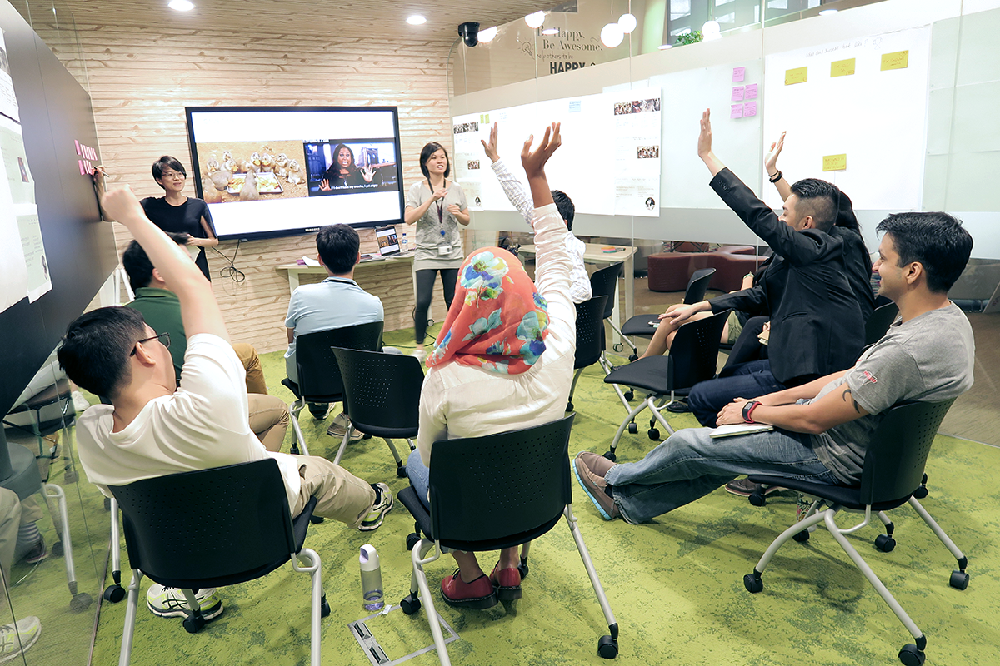

Hi, I am Yi Xin, a UI/UX designer.
Currently, I am working at GovTech, the government technology agency of Singapore. Being able to make an impact in people's lives through design is a dream come true for me.
As part of the Open Government Products team at GovTech, I had the opportunity to transform the bus industry with Beeline and digitise the citizens’ parking journey with Parking.sg. I have the priviledge of experiencing the entire product cycle and leading design for these projects from discovery, user research, prototyping, information architecture, user interface design to charting product direction, running of trials, to launch and production.
Running a team workshop to discuss the future of Beeline, a mobility platform.
Before joining the government, I worked on One Upon Light, an award-winning indie monochromatic puzzle game about light and shadows on Sony PS4, done together with the awesome people at SUTD Game Lab. I have also mentored young designers and developers on design and development practices at the Game Innovation Programme.

The One Upon Light Team
While it was fun making games, solving real world problems inspires me more. That made me go explore design thinking and user centered approaches and how they can guide us to make informed design decisions.
Outside of designing digital stuff, I enjoy swimming and eating mala hotpot. I also like to spend time with my husband and son. I am also slightly obsessed with mindfulness. Recognising the inner critic and how the brain has 2 major minds - the impulsive monkey mind vs the sensible regulating brain has been an empowering journey.